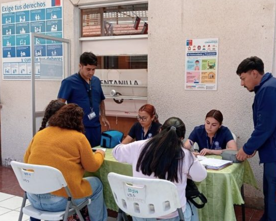
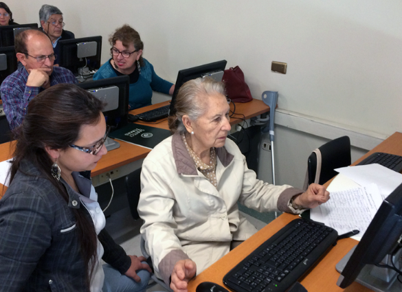
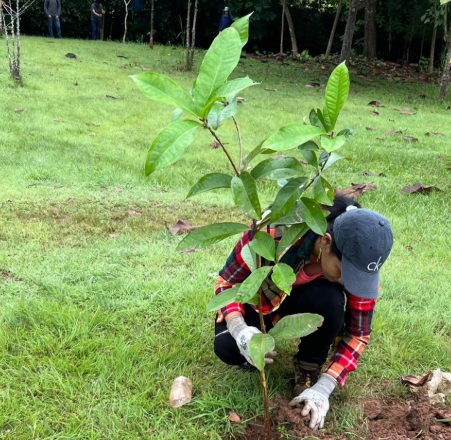
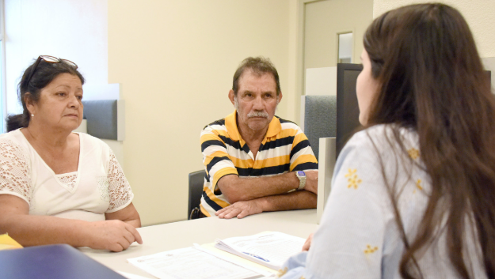
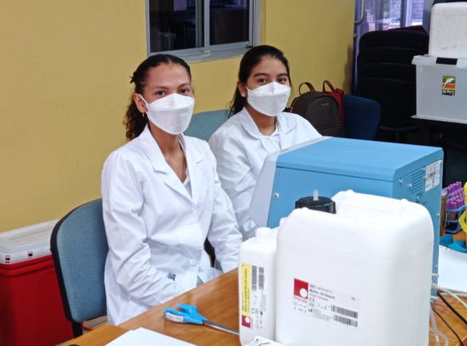
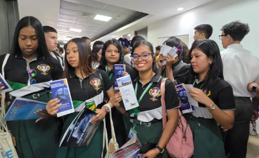
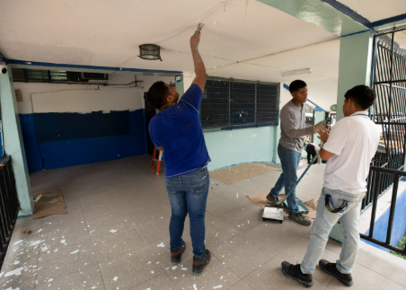
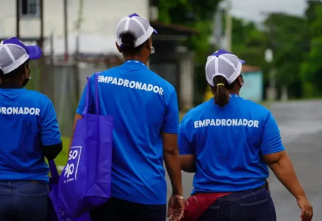

En ejecuciónJornada de Salud Comunitaria - El Marañón
Brigadas médicas y odontológicas en coordinación con el Ministerio de Salud dirigidas a las familias de la comunidad.

Programa de Servicio Social
Esta plataforma reúne la información sobre las labores sociales realizadas, en ejecución y planificadas por la Extensión Universitaria de Soná, además de los documentos y guías necesarias para participar en ellas.
Actualidad
Proyectos sociales que actualmente desarrolla la Extensión Universitaria de Soná.

En ejecuciónBrigadas médicas y odontológicas en coordinación con el Ministerio de Salud dirigidas a las familias de la comunidad.

En ejecuciónTalleres semanales para enseñar el uso de teléfonos inteligentes, internet y trámites digitales a adultos mayores de la zona urbana de Soná.

En ejecuciónPlan de siembra de especies nativas y limpieza del cauce para la recuperación de la microcuenca, en conjunto con MiAmbiente.

En ejecuciónOrientación legal básica para residentes en temas de derecho de familia, propiedad y trámites administrativos.
Historial
Proyectos sociales finalizados con éxito, junto con un resumen de su impacto en la comunidad.

FinalizadoJornada realizada en coordinación con el Hospital Joaquín Pablo Franco Sosa, logrando recolectar más de 80 unidades de sangre.

FinalizadoMás de 300 estudiantes participaron en charlas sobre la oferta académica de la Universidad de Panamá.

FinalizadoPintura, reparación de techos y restauración del mobiliario escolar en la Escuela Primaria de Calidonia.

FinalizadoLevantamiento de información productiva en fincas de la región para apoyar proyectos de extensión agrícola.
Recursos
Material de apoyo oficial para iniciar, dar seguimiento o cerrar las labores sociales.
Pautas básicas y esquema del CRUV para elaborar propuestas de servicio social.
Descargar DOCXFormato oficial en blanco para la inscripción de estudiantes en los proyectos.
Descargar PDFDocumento de registro y control de asistencia y horas acumuladas por turno.
Descargar DOCEstructura para reportar objetivos alcanzados, cronograma, población beneficiada y evidencias.
Descargar DOCXContacto
Escríbenos para coordinar evaluación, asesoría o registro de tu proyecto.
Para información sobre labores sociales, proyectos y documentación, comunícate con la Secretaría de la Extensión Universitaria de Soná.